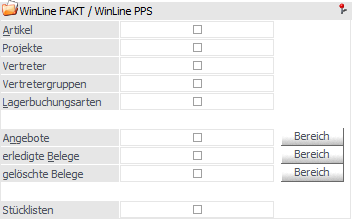
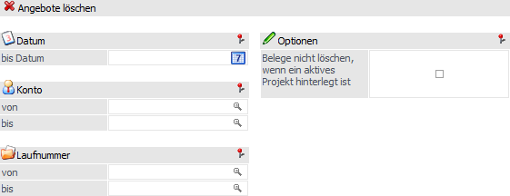
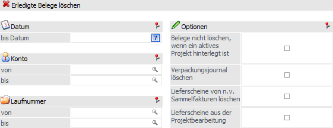
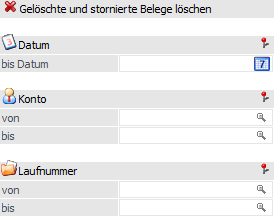

Über diesen Bereich können Bestandteile aus der WinLine FAKT und der WinLine PPS reorganisiert werden.

Artikel
Alle Artikel, für die folgendes gilt, werden gelöscht:
ü inaktiv gesetzt
ü keine Lagerjournalzeilen
ü Stammwerte = 0
ü keine Einträge in den Artikelperioden für die aktuelle Periode
ü keine Hinterlegung des Artikels in Belegen
ü keine Hinterlegung des Artikels in Makros
ü keine Hinterlegung des Artikels in Produktionsstücklisten (Handels- und Fertigungsstücklisten)
ü keine Erfassungszeilen bei einem bestehenden Projekt
Hinweis
Diese Kriterien werden auch für verknüpfte Artikel geprüft.
Projekte
Damit können Projekte gelöscht werden, die auf inaktiv gesetzt wurden. Bevor das Projekt gelöscht wird, wird geprüft, ob das Projekt noch bei einem Beleg hinterlegt ist. Ist dies der Fall, kann das Projekt auch nicht gelöscht werden.
Vertreter, Vertretergruppen
Alle Vertreter und Vertretergruppen, für die folgenden gilt, werden gelöscht:
ü inaktiv gesetzt
ü nicht bebucht (Vertreterjournal)
ü nicht im Kontenstamm verwendet werden
ü in keiner Vertretergruppe enthalten
ü in keinem Beleg vorkommen
ü in keinem Stapel verwendet werden
ü in keiner Vertretervorlage hinterlegt
Lagerbuchungsarten
Alle Lagerbuchungsarten, für die folgendes gilt, werden gelöscht:
ü in keiner Lagerbuchungszeile vorkomme,
ü in keiner der Parameterwerte vorkommen
Angebote
Wird die Checkbox "Angebote" oder auf den Button "Bereich" geklickt, so wird automatisch ein Fenster geöffnet, in dem eine Angebots-Selektionen vorgenommen werden kann. Alle entsprechenden Angebote werden nachfolgend gelöscht.
Hinweis
Es muss zumindest das Feld "Datum bis" ausgefüllt werden. Ist dem nicht der Fall, so wird die Checkbox "Angebote" nach dem Bestätigen der Selektion wieder deaktiviert.

Ø Datum bis
Hier kann eine Einschränkung des Datumsbereiches vorgenommen werden, für den Angebote gelöscht werden sollen.
Beispiel
Wird im Eingabefeld "bis Datum" das Datum "31.10.23" eingegeben, so werden alle Angebote, die vor dem 31. Oktober 2023 erstellt wurden, gelöscht.
Ø Konto von / bis
Hier kann eine Einschränkung des Kontenbereiches vorgenommen werden, für den Angebote gelöscht werden sollen.
Ø Laufnummer von / bis
Hier kann eine Einschränkung der Laufnummer vorgenommen werden, für die Angebote gelöscht werden sollen.
Ø Belege nicht löschen, wenn ein aktives Projekt hinterlegt ist
Durch Aktivierung dieser Option werden nur jene Angebote berücksichtigt, bei denen kein oder ein inaktives Projekt hinterlegt ist.
erledigte Belege
Wird die Checkbox "erledigte Belege" oder auf den Button "Bereich" geklickt, so wird automatisch ein Fenster geöffnet, in dem eine Beleg-Selektionen vorgenommen werden kann. Alle entsprechenden erledigten Belege werden nachfolgend gelöscht.
Hinweis
Es muss zumindest das Feld "Datum bis" ausgefüllt werden. Ist dem nicht der Fall, so wird die Checkbox "Angebote" nach dem Bestätigen der Selektion wieder deaktiviert.
Achtung
Beim Löschen erledigter Belege werden auch gedruckte Rechnungen herangezogen.

Ø Datum bis
Hier kann eine Einschränkung des Datumsbereiches vorgenommen werden, für den erledigte Belege gelöscht werden sollen.
Ø Konto von / bis
Hier kann eine Einschränkung des Kontenbereiches vorgenommen werden, für den erledigte Belege gelöscht werden sollen.
Ø Laufnummer von / bis
Hier kann eine Einschränkung der Laufnummer vorgenommen werden, für die erledigte Belege gelöscht werden sollen.
Ø Belege nicht löschen, wenn ein aktives Projekt hinterlegt ist
Durch Aktivierung dieser Option werden nur jene erledigte Belege berücksichtigt, bei denen kein oder ein inaktives Projekt hinterlegt ist.
Ø Verpackungsjournal löschen
Mit Hilfe dieser Option werden neben den erledigten Belegen auch die korrespondierenden Verpackungsjournalzeilen gelöscht.
Ø Lieferscheine von n.v. Sammelfakturen löschen
Bei Aktivierung dieser Option werden auch erledigte Lieferscheine von nicht verfügbaren Sammelfakturen gelöscht. Ein Beipiel, wie es zu solchen Belegen kommen kann ist, dass eine Sammelrechnung vollständig storniert wurde, ohne die Lieferscheine mit zu stornieren und die stornierte Sammelrechnung im Anschluss gelöscht wurde.
Ø Lieferscheine aus der Projektbearbeitung
Mit Hilfe dieser Option werden Lieferscheine, die beim Erstellen einer Schlussrechnung automatisch in der Projektbearbeitung gedruckt wurden, beim Reorganisieren gelöscht, wenn die Schlussrechnung selbst auch reorganisiert wurde.
gelöschte Belege
Wird die Checkbox "gelöschte Belege" oder auf den Button "Bereich" geklickt, so wird automatisch ein Fenster geöffnet, in dem eine Beleg-Selektionen vorgenommen werden kann. Alle entsprechenden Belege, welche den Belegstatus "LLLL" besitzen, werden nachfolgend gelöscht (dabei handelt es sich auch um Belege die storniert wurden; diese erhalten ebenfalls den Status "LLLL").

Ø Datum bis
Hier kann eine Einschränkung des Datumsbereiches vorgenommen werden, für den gelöschte Belege gelöscht werden sollen.
Ø Konto von / bis
Hier kann eine Einschränkung des Kontenbereiches vorgenommen werden, für den gelöschte Belege gelöscht werden sollen.
Ø Laufnummer von / bis
Hier kann eine Einschränkung der Laufnummer vorgenommen werden, für die gelöschte Belege gelöscht werden sollen.
Stücklisten
Stücklisten werden gelöscht, wenn folgende Voraussetzungen erfüllt sind:
ü inaktiv gesetzt
ü sie bei keinem Artikel mehr hinterlegt ist
ü sie in keinem Beleg mehr vorkommt